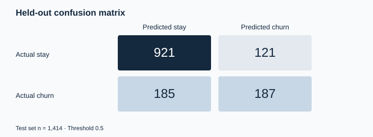
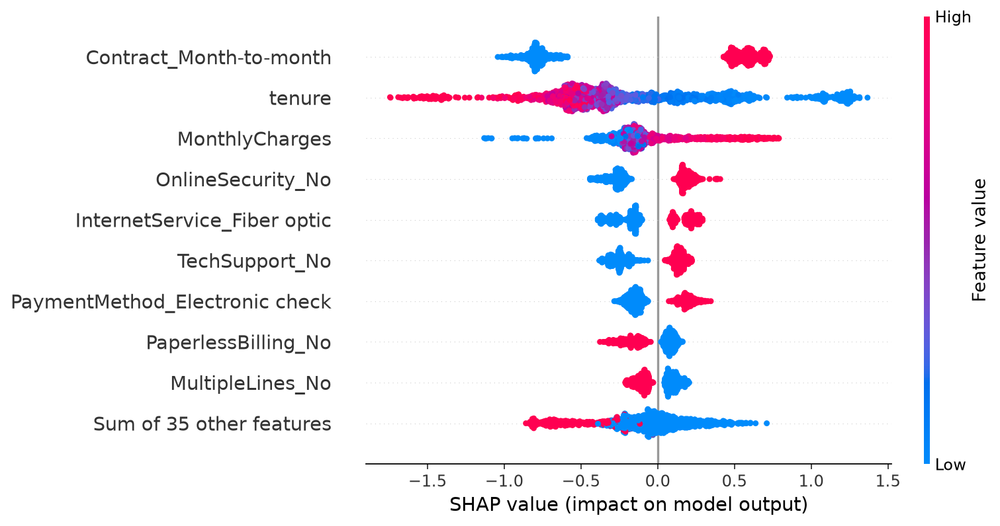
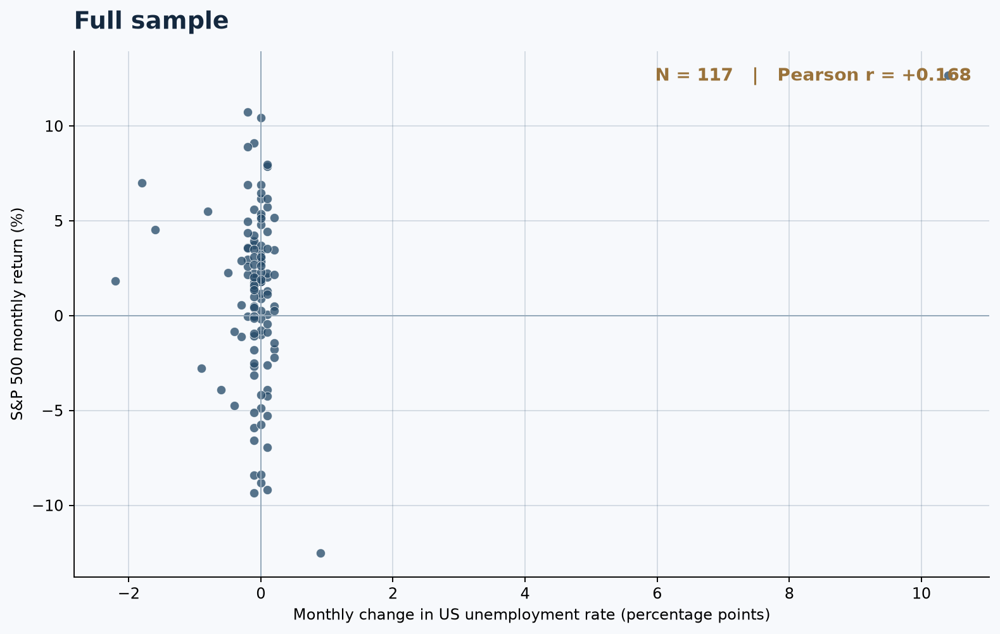

Explainable churn prediction
Held-out XGBoost ROC AUC 0.8454, with SHAP attribution and baseline comparison.
Explore evidence →Financial Markets, Quantitative Analytics & Data Science
Exploring the intersection of financial markets, economic research, and computational methods — transforming complex data into meaningful insights for investment analysis, business strategy, and decision-making.
Master's candidate in Information Systems Management at Carnegie Mellon University. Economics graduate of The Ohio State University, Magna Cum Laude.

My background combines economics, financial research and information systems. I am particularly interested in translating quantitative evidence into practical decisions across markets, customer strategy and technology-enabled operations.
Market monitoring, company and industry research, fixed-income transaction support, historical equity risk and economic interpretation.
Customer segmentation, retention diagnostics, SQL-based data preparation and KPI reporting for business stakeholders.
Classification baselines, model evaluation, requirements analysis and translating technical findings into product decisions.
Held-out XGBoost ROC AUC 0.8454, with SHAP attribution and baseline comparison.
Explore evidence →120-country analysis, interactive map and GDP-adjusted regression.
Explore research →Six interactive scenario models, from valuation to classification decisions.
Launch studio →Historical Apple equity risk analysis across 506 trading observations.
Explore analysis →
Contract-level retention analysis using IBM's illustrative Telco dataset.
Explore analysis →
Logistic regression baseline with reproducible Python code and held-out evaluation.
Explore model →Evaluating financial information design and improving the clarity of gold price trends through exploratory user feedback.
Explore case study →
Cross-country analysis of working hours, life satisfaction and regional differences.
Explore analysis →Explore six interactive scenario models, a customer intelligence dashboard, and research implementations for explainable machine learning, macroeconomics and financial data engineering.
Launch research lab → Customer intelligence dashboard →Illustrative assumptions, not empirical investment performance.
Three research pipelines executed on GitHub Actions with public datasets, reproducible methods and published outputs. Explore the questions, benchmarks and limitations behind each result.

XGBoost versus logistic regression, with held-out evaluation and SHAP interpretability.
Read the research →
Full-sample r +0.168 versus −0.200 after two extreme months are excluded.
Read the research →Validated historical prices transformed into daily and monthly research exports.
Read the research →Explore the milestones connecting financial research, analytics and information systems.
Economic reasoning and historical research.
Financial analysis and support for six bond issuances.
SQL, financial records and customer analysis.
ASC Honors Program and Dean’s List.
Information systems, machine learning and analytics.
Stakeholder communication, requirements and evaluation.
Analyzed customer, sales and market data using SQL and Excel. Delivered recurring performance reports and recommendations supporting retention and regional sales planning.
Organized financial records, supported workflow automation and quality checks, and communicated predictive outputs to business stakeholders.
Monitored market activity, researched companies and industries, and supported financial documentation and coordination for corporate-directed bond issuances.
Collaborating with a sponsor team to define requirements and success criteria for a product balancing nutrition, dietary needs, household preferences, cost and preparation constraints.
Supporting stakeholder communication, MVP prioritization, project planning and evaluation of technical approaches.
Heinz College · Master of Information Systems Management
Focus areas: Applied machine learning, data mining, quantitative analytics, financial modeling, and technology management.
B.A. Economics · Minor in History
Magna Cum Laude · GPA 3.783/4.0 · History minor GPA 4.0/4.0
ASC Honors Program · Dean's List (5 semesters)
Define the business question, decision owner and success criteria.
Assess data quality, define metrics and document assumptions.
Select a suitable statistical or analytical method and evaluate limitations.
Translate findings into actionable recommendations and measurable next steps.
Model evaluation, SHAP and reproducible pipelines.
View evidence →Segmentation, retention metrics and interactive reporting.
View dashboard →Valuation, portfolio allocation and historical risk.
Explore models →Cross-country regression, robustness and interactive geographic analysis.
View research →